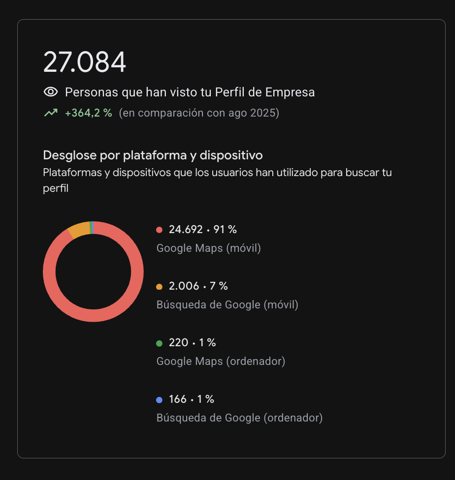
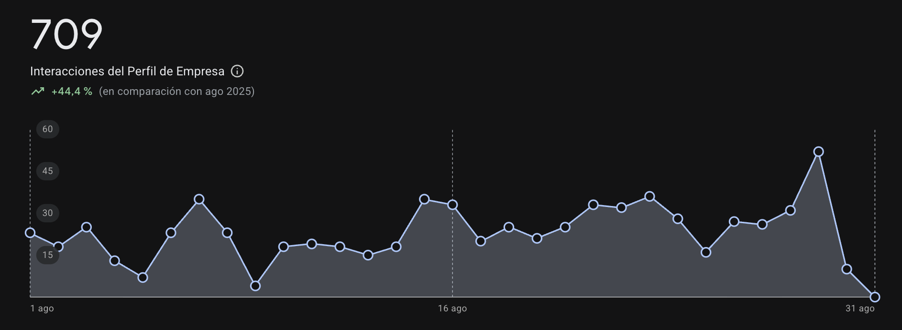
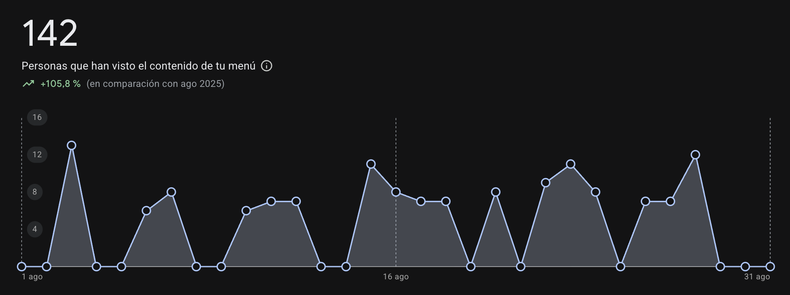
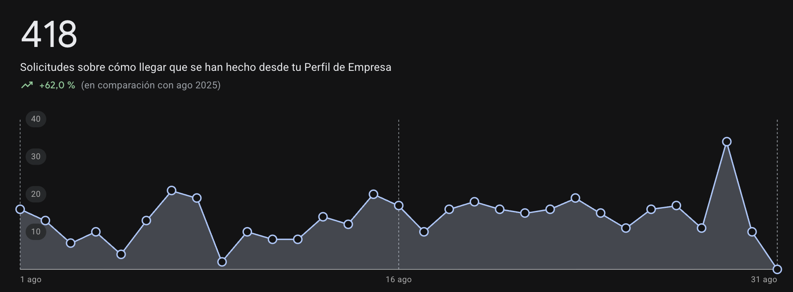
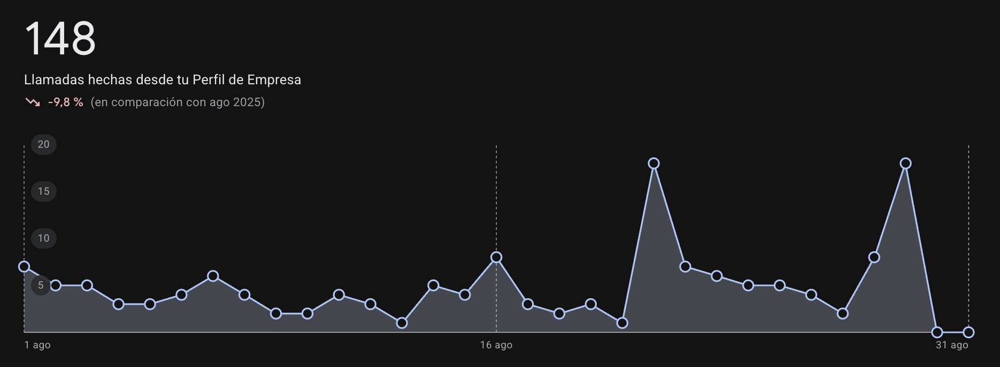
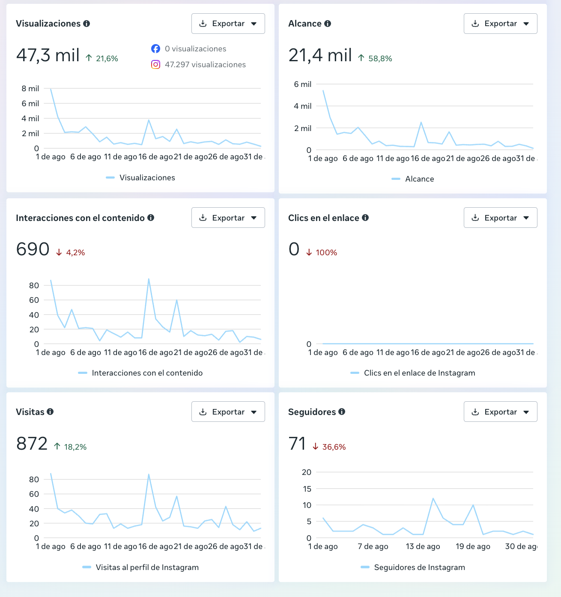
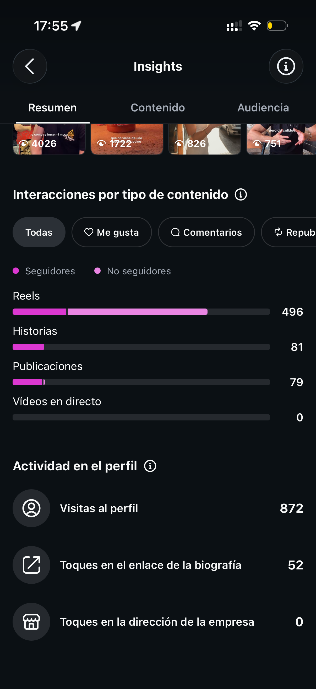
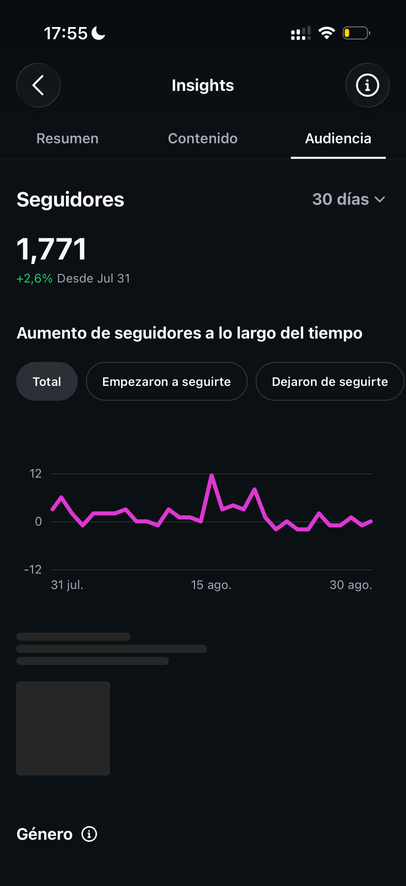
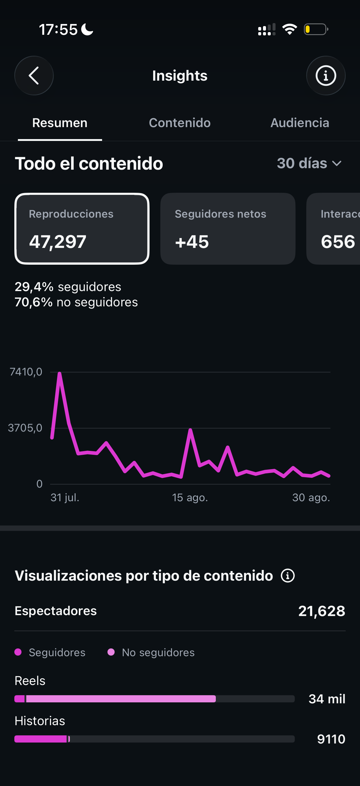

Un trimestre de trabajo (junio–agosto 2026) llevó a Da Dina de una presencia digital inactiva a su mejor mes en Google Business Profile e Instagram desde que arrancamos.
| Métrica | Jul → Ago | Mensual | Interanual |
|---|---|---|---|
| Interacciones totales | 624 → 709 | +13,6% | +44,4% |
| Vistas de la carta | 124 → 142 | +14,5% | +105,8% |
| Solicitudes "cómo llegar" | 324 → 418 | +29,0% | +62,0% |
| Llamadas realizadas | 175 → 148 | -15,4% | -9,8% |
El término de marca "dina" acumula ya 918 impresiones, y entre las variantes de "da dina restaurante y pizzeria..." suman 796 más — la búsqueda directa de marca dejó de ser marginal y ya tiene peso real en el conjunto.
Capturas de referencia · Google Business Profile




| Métrica | Jul → Ago | Variación |
|---|---|---|
| Visualizaciones | 38,9 mil → 47,3 mil | +21,6% |
| Alcance | 13,5 mil → 21,4 mil | +58,8% |
| Visitas al perfil | 738 → 872 | +18,2% |
| Interacciones | 720 → 690 | -4,2% |
| Seguidores nuevos | 112 → 71 | -36,6% |
en el enlace de la biografía este mes, según la actividad del perfil de la app — la señal más clara hasta ahora de que el contenido genera tráfico real hacia fuera de la plataforma, algo que no se había visto en meses anteriores. La cuenta cerró agosto con 1.771 seguidores (+45 netos en el mes).




El trimestre junio–agosto cierra con el mejor balance de los tres meses: Instagram dobla su alcance frente a julio y bate récord de visualizaciones, Google Business Profile crece con fuerza interanual en prácticamente todos los indicadores, y aparece por primera vez una señal de conversión real medible — 52 toques al enlace de la biografía.
En tres meses, el perfil de Instagram pasó de actividad mínima a generar entre 13 y 21 mil de alcance mensual de forma sostenida, y el Business Profile de Google multiplicó su descubrimiento un +364,2% interanual. Resultados que respaldan el trabajo hecho.
Hablemos — sin compromiso.
© 2026 La Miga · Datos de Google Business Profile e Instagram · Periodo jun–ago 2026